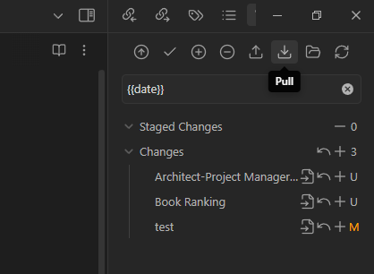
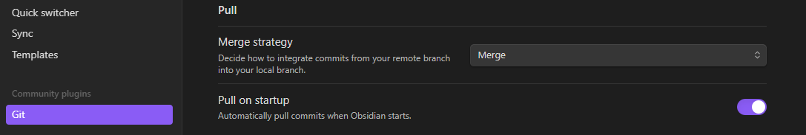
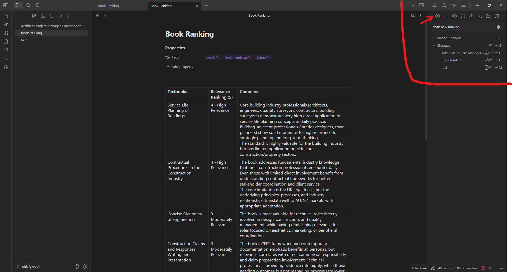

Setting up Obsidian with Git for team collaboration
Most of the instructions here I derived from the Obsidian Git docs, but this is a step-by-step recipe for using Obsidian + Git together. Skip any steps you've already done.
One thing to keep in mind: this setup pushes and pulls changes manually — it's not real-time sync. Manual conflicts will happen when team members edit the same file, so communicate with your team before editing.
1. Install Obsidian
Download and install Obsidian from the official website.
2. Install Git
Make sure you have Git installed on your system. Grab it from the official Git website.
Enable third-party software access:

Enable Git Credential Manager:

3. Create a GitHub account
If you don't have a GitHub account, create one at github.com. You'll need it to push your Obsidian vault whenever you make changes.
4. Set up your Git identity
Open your terminal (Command Prompt, PowerShell, or Git Bash) and set your Git identity:
git config --global user.name "Your GitHub Name"
git config --global user.email "your.email@example.com"5. Clone the vault
Clone your vault repository. In your terminal:
cd C:\Users\YourUsername\Documents # where you want the vault
git clone https://github.com/your-username/your-vault.gitThere are two ways to get the contents of an existing vault. The other option is described under For existing remote repository, but I recommend the clone-first flow above — it's simpler.
6. Open the vault in Obsidian
Open Obsidian and select Open folder as vault. Navigate to the folder where you cloned the repo (e.g. C:\Users\YourUsername\Documents\your-vault) and open it.
7. Install the Git plugin
In Obsidian, go to Settings → Community plugins → Browse and search for "Git". Install the plugin called "Git" by Vinzent and enable it.
You can configure the plugin under Settings → Git, but the defaults are fine for most workflows.
The daily workflow
Now that everything's wired up, here's a simple daily rhythm. Full command reference: available commands.
Before starting work
Two options:
- Open the Git source-control panel (icon in the right sidebar) and click Pull to pull the latest changes from the remote. Do this first whenever you start a session so you're working from current state.

- Or enable Pull on startup in the Git plugin settings — Obsidian will pull automatically when you open it.

After finishing work
Commit your changes and push them to the remote.

Open the Git source-control panel, type a commit message describing your changes, and click Commit-and-sync — that commits and pushes in one step. More about Commit-and-sync.
You can also commit and push separately. Type your commit message, click Commit to make the local commit, then click Push to send it to the remote.
Best practices
- Pull before starting work.
- Commit frequently with clear messages.
- Push at the end of sessions so the remote stays current.
- Communicate with your team before editing shared files.